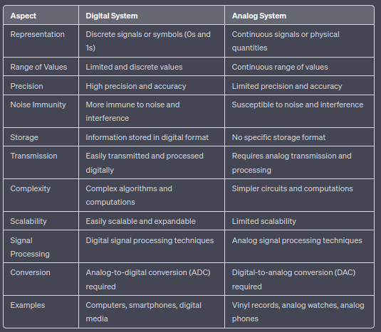

Digtial Design

1.1 Digital and Analog Systems
Analog System
Analog system carries signals in the form of voltage and current which are a continuous function of continuous time variable. The analog system processes analog signals to give output in the required analog form.
Digital System
A digital system represents the signal as a sequence of numbers. Digital systems are those systems that process digital input to give the output in digital form.
Difference Between Digtial and Analog System
1.2. Number System
Number systems are used to represent and manipulate numeric data in digital systems.
Binary
- Base 2 number system used in digital systems.
- Consists of two digits: 0 and 1.
- Each digit in a binary number is called a bit (binary digit).
- Binary numbers are commonly used in computer systems to represent data and perform digital computations.
- Binary numbers are essential for digital logic operations and storage of information in electronic devices.
Decimal
- Base 10 number system used in everyday life.
- Base 10 number system used in everyday life.
- Consists of ten digits: 0 to 9.
- Decimal numbers are used widely for counting, arithmetic calculations, and representing quantities in various fields.
- Decimal numbers are intuitive to understand and align with our natural counting system.
Octal
- Base 8 number system.
- Consists of eight digits: 0 to 7.
- Octal numbers are commonly used in computer programming, particularly in early computer systems.
- Octal numbers are often used to represent groups of three binary digits (bits), as three binary digits can be uniquely represented by one octal digit.
Hexadecimal
- Base 16 number system.
- Consists of sixteen digits: 0 to 9 and A to F, where A represents 10, B represents 11, and so on up to F representing 15.
- Hexadecimal numbers are commonly used in computer systems for various purposes, such as representing memory addresses, colors, and binary data.
- Hexadecimal provides a more compact and readable representation of binary values compared to binary or octal.
Logic Elements Logic elements, also known as logic gates or digital gates, are fundamental building blocks in digital circuits that perform logical operations on binary inputs to produce binary outputs. They are essential components in the design and implementation of digital systems. Here are some common logic elements:
AND Gate: The AND gate has two or more inputs and produces a high output (1) only when all its inputs are high (1). The output is low (0) if any of the inputs are low (0). The Boolean expression for an AND gate with inputs A and B is: output = A AND B.
OR Gate: The OR gate has two or more inputs and produces a high output (1) if any of its inputs are high (1). The output is low (0) only when all the inputs are low (0). The Boolean expression for an OR gate with inputs A and B is: output = A OR B.
NOT Gate (Inverter): The NOT gate has a single input and produces the complement (opposite) of its input. It inverts the input signal: if the input is high (1), the output is low (0), and vice versa. The Boolean expression for a NOT gate with input A is: output = NOT A.
NAND Gate: The NAND gate is a combination of an AND gate followed by a NOT gate. It produces the complement (opposite) of the output of an AND gate. The output of the NAND gate is low (0) only when all its inputs are high (1); otherwise, the output is high (1). The Boolean expression for a NAND gate with inputs A and B is: output = NOT (A AND B).
NOR Gate: The NOR gate is a combination of an OR gate followed by a NOT gate. It produces the complement (opposite) of the output of an OR gate. The output of the NOR gate is high (1) only when all its inputs are low (0); otherwise, the output is low (0). The Boolean expression for a NOR gate with inputs A and B is: output = NOT (A OR B).
XOR Gate (Exclusive OR): The XOR gate has two inputs and produces a high output (1) when the number of high inputs is odd. The output is low (0) when the number of high inputs is even. The Boolean expression for an XOR gate with inputs A and B is: output = A XOR B.